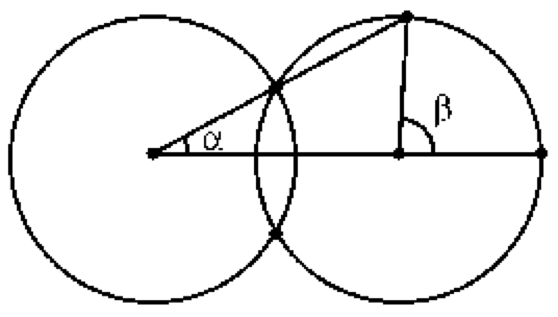

Two intersecting circles of radius R are given, and the distance between their centers is greater than R. Prove that β = 3α $($Fig.$)$.

Let A and B be the vertices of the angles $\alpha$ and $\beta$, P the intersection point of the non-coinciding sides of these angles, and Q the common point of the given circles lying on the segment PA. The triangle AQB is isosceles, so $\angle$ PQB = 2 $\alpha$. And since $\angle$ PQB + $\angle$ QPB = $\beta$ + $\angle$ QBA, then $\beta$ = 3 $\alpha$.